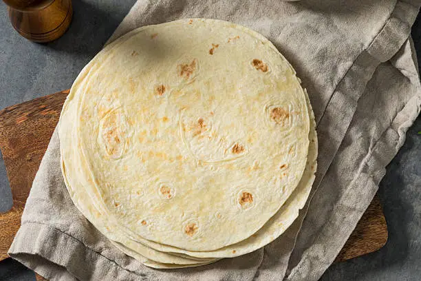

Homemade Tortillas

Simple ingredients, generations of comfort.
Yields: 8-10 servings
Prep Time: 1 hour 10 mins
Cook Time: 15 mins
Ingredients
- 4 cups all-purpose flour
- 1 teaspoon salt
- 1 teaspoon baking powder
- 1 cup melted butter
- 1 cup warm water
Directions
- In a mixing bowl, combine the flour, salt, and baking powder.
- Add the melted butter to the dry ingredients, mixing until well incorporated.
- Gradually add warm water, stirring until a dough forms.
- Cover the dough and let it rest for at least 1 hour in a Ziploc bag or covered bowl.
- After resting, form the dough into small balls. Flatten each ball with a rolling pin to form
tortillas, bigger tortillas will be thinner.
- Cook the tortillas on a hot shallow pan, turning once bubbles form for a light golden finish on
both sides.